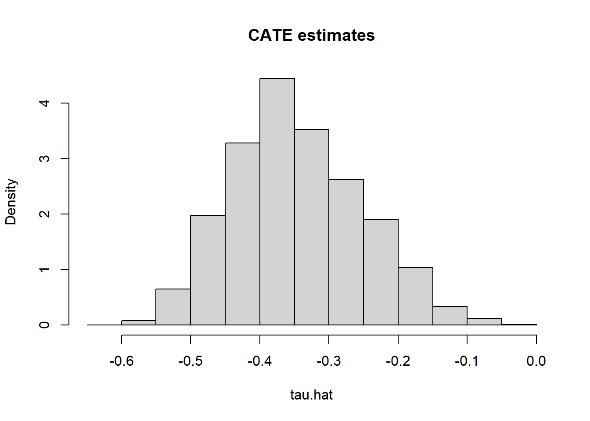

chapter: 6 HTE I: Binary treatment
Source RMD file: link
前章では、母集団全員に対する平均処置効果について学んできた。しかし、平均効果を見るだけでは、ある個々人がどのように処置に対して反応したかという重要な事実を十分に把握することができない。そこでこの章では、以下で定義される条件付き因果効果（CATE）について見ていく。
\[\begin{equation} \tag{6.1} \tau(x) := \mathop{\mathrm{E}}[Y_i(1) - Y_i(0) | X_i = x] \end{equation}\]In the previous chapter, we learned how to estimate the effect of a binary treatment averaged over the entire population. However, the average may obscure important details about how different individuals react to the treatment. In this chapter, we will learn how to estimate the conditional average treatment effect (CATE),
これは、「localized」されたバージョンの平均処置効果であり、観察可能な変数で条件付けされたものである。
(6.1) は一般化しすぎていて利用しにくいことがしばしばあり、特に共変量が高次元な場合には顕著である。強いモデリングの仮定をおかない限りは、信頼のおける推定は難しく、推定後に結果を意味のある形で要約することも難しい。そこで代わりに、単純なグループごとの処置効果の平均値を推定することとする。
which is a “localized” version of the average treatment effect conditional on a vector of observable characteristics.
It’s often the case that (6.1) is too general to be immediately useful, especially when the observable covariates are high-dimensional. It can be hard to estimate reliably without making strong modeling assumptions, and hard to summarize in a useful manner after estimation. In such situations, we will instead try to estimate treatment effect averages for simpler groups
\[\begin{equation} \tag{6.2} \mathop{\mathrm{E}}[Y_i(1) - Y_i(0) | G_i = g], \end{equation}\]以下では、あらかじめ定義したサブグループ別の処置効果について推定するのと、サブグループを見つける方法（Data drivenで）を見ていく。
where \(G_i\) indexes subgroups of interest. Below you’ll learn how to estimate and test hypotheses about pre-defined subgroups, and also how to discover subgroups of interest from the data. In this tutorial, you will learn how to use estimates of (6.1) to suggest relevant subgroups \(G_i\) (and in the next chapters you will find out other uses of (6.1) in policy learning and evaluation).
GSSのデータを使用する。RCTデータだが、以下で見ていく手法は、Unconfoundednessが成り立っている限りは観察データにも利用できる。
We’ll continue using the abridged version of the General Social Survey (GSS) (Smith, 2016) dataset that was introduced in the previous chapter. In this dataset, individuals were sent to treatment or control with equal probability, so we are in a randomized setting. However, many of the techniques and code shown below should also work in an observational setting provided that unconfoundedness and overlap are satisfied (these assumptions were defined in the previous chapter).
# pacmanでのインストールに変更した
# causalTreeはCRANにないのでGithubよりダウンロード
if (!require("pacman")) install.packages("pacman")
pacman::p_load(tidyverse,
grf,
rpart,
glmnet,
splines,
MASS,
lmtest,
sandwich,
devtools,
reshape2)
if (!require("causalTree")) devtools::install_github('susanathey/causalTree') As with other chapters in this tutorial, the code below should still
work by replacing the next snippet of code with a different dataset,
provided that you update the key variables treatment, outcome, and
covariates below. Also, please make sure to read the comments as they
may be subtle differences depending on whether your dataset was created
in a randomized or observational setting.
# Read in data
data <- read.csv("https://docs.google.com/uc?id=1kSxrVci_EUcSr_Lg1JKk1l7Xd5I9zfRC&export=download")
n <- nrow(data)
# Treatment: does the the gov't spend too much on "welfare" (1) or "assistance to the poor" (0)
treatment <- "w"
# Outcome: 1 for 'yes', 0 for 'no'
outcome <- "y"
# Additional covariates
covariates <- c("age", "polviews", "income", "educ", "marital", "sex")データの形状
data %>% summary()## X y w age
## Min. : 1 Min. :0.0000 Min. :0.0000 Min. :18.0
## 1st Qu.: 8276 1st Qu.:0.0000 1st Qu.:0.0000 1st Qu.:32.0
## Median :16649 Median :0.0000 Median :1.0000 Median :43.0
## Mean :17552 Mean :0.2543 Mean :0.5345 Mean :45.3
## 3rd Qu.:28017 3rd Qu.:1.0000 3rd Qu.:1.0000 3rd Qu.:57.0
## Max. :36501 Max. :1.0000 Max. :1.0000 Max. :89.0
## polviews income educ marital sex
## Min. :1.000 Min. : 1.0 Min. : 0.00 Min. :1.0 Min. :1.000
## 1st Qu.:3.000 1st Qu.:10.0 1st Qu.:12.00 1st Qu.:1.0 1st Qu.:1.000
## Median :4.000 Median :12.0 Median :13.00 Median :1.0 Median :2.000
## Mean :4.107 Mean :10.6 Mean :13.29 Mean :2.4 Mean :1.548
## 3rd Qu.:5.000 3rd Qu.:12.0 3rd Qu.:16.00 3rd Qu.:4.0 3rd Qu.:2.000
## Max. :7.000 Max. :12.0 Max. :20.00 Max. :5.0 Max. :2.0006.1 Pre-specified hypotheses
ここではデータを見る前にグループは決まっていた(pre-specified)と考える。単に処置とグループの交差項を入れておけば良い。
We will begin by learning how to test pre-specified null hypotheses of the form
\[ H_{0}: \mathop{\mathrm{E}}[Y(1) - Y(0) | G_i = 1] = \mathop{\mathrm{E}}[Y(1) - Y(0) | G_i = 0]. \]
That is, that the treatment effect is the same regardless of membership to some group \(G_i\). Importantly, for now we’ll assume that the group \(G_i\) was pre-specified – it was decided before looking at the data.
In a randomized setting, if the both the treatment \(W_i\) and group membership \(G_i\) are binary, we can write
\[ \mathop{\mathrm{E}}[Y_i(W_i)|G_i] = \mathop{\mathrm{E}}[Y_i|W_i, G_i] = \beta_0 + \beta_w W_i + \beta_g G_i + \beta_{wg} W_i G_i \]
When \(W_i\) and \(G_i\) are binary, this decomposition is true without loss of generality. Why?
This allows us to write the average effects of \(W_i\) and \(G_i\) on \(Y_i\) as
\[ \mathop{\mathrm{E}}[Y(1) | G_i=1] = \beta_0 + \beta_w W_i + \beta_g G_i + \beta_{wg} W_i G_i,\\ \mathop{\mathrm{E}}[Y(1) | G_i=0] = \beta_0 + \beta_w W_i, \\ \mathop{\mathrm{E}}[Y(0) | G_i=1] = \beta_0 + \beta_g G_i, \\ \mathop{\mathrm{E}}[Y(0) | G_i=0] = \beta_0. \]
政治的志向が4未満をconservative、4以上をliveralとするバイナリ変数を新たに作る。
処置Wとの交差項を見ることで政治志向による処置効果の違いを見ることができる。
Rewriting the null hypothesis (??) in terms of the decomposition (??), we see that it boils down to a test about the coefficient in the interaction: \(\beta_{xw} = 0\). Here’s an example that tests whether the treatment effect is the same for “conservative” (
polviews< 4) and “liberal” (polviews\(\geq\) 4) individuals.
# Only valid in randomized settings
# Suppose this his group was defined prior to collecting the data
data$conservative <- factor(data$polviews < 4) # a binary group
group <- 'conservative'
# Recall from last chapter -- this is equivalent to running a t-test
fmla <- formula(paste(outcome, ' ~ ', treatment, '*', group))
ols <- lm(fmla, data=data)
coeftest(ols, vcov=vcovHC(ols, type='HC2'))##
## t test of coefficients:
##
## Estimate Std. Error t value Pr(>|t|)
## (Intercept) 0.4836473 0.0050842 95.127 < 2.2e-16 ***
## w -0.3789182 0.0058604 -64.657 < 2.2e-16 ***
## conservativeTRUE -0.1590214 0.0092479 -17.195 < 2.2e-16 ***
## w:conservativeTRUE 0.1160034 0.0103710 11.185 < 2.2e-16 ***
## ---
## Signif. codes: 0 '***' 0.001 '**' 0.01 '*' 0.05 '.' 0.1 ' ' 1 Interpret the results above. The coefficient \(\beta_{xw}\)
is denoted by w:conservativeTRUE. Can we detect a difference in
treatment effect for conservative vs liberal individuals? For whom is
the effect larger?
複数のグループがあるときには、複数の仮説検定を行う必要がある。その場合はBonferroniの補正を行う必要がある。（少々保守的すぎるが）。補正はRのbaseに入っているp.adjustコマンドで出来る。
以下のコードでは、polyviews=1と比較して、全部の政治的志向ごとに異なるという仮説のもとで検定を実施し、補正を行う。
Sometimes there are many subgroups, leading to multiple hypotheses such as
\[ H_0: \mathop{\mathrm{E}}[Y(1) - Y(0) \ | \ G_i = 1] = \mathop{\mathrm{E}}[Y(1) - Y(0) \ | \ G_i = g] \qquad \text{for many values of }g. \]
In that case, we need to correct for the fact that we are testing for multiple hypotheses, or we will end up with many false positives. The Bonferroni correction (wiki) is a common method for dealing with multiple hypothesis testing, though it is often too conservative to be useful. It is available via the function
p.adjustfrom baseR. The next snippet of code tests whether the treatment effect at each level ofpolviewsis different from the treatment effect frompolviewsequals one.
# Only valid in randomized setting.
# Example: these groups must be defined prior to collecting the data.
group <- 'polviews'
# Linear regression.
fmla <- formula(paste(outcome, ' ~ ', treatment, '*', 'factor(', group, ')'))
ols <- lm(fmla, data=data)
ols.res <- coeftest(ols, vcov=vcovHC(ols, type='HC2'))
# Retrieve the interaction coefficients
interact <- which(sapply(names(coef(ols)), function(x) grepl("w:", x)))
# Retrieve unadjusted p-values and
unadj.p.value <- ols.res[interact, 4]
adj.p.value <- p.adjust(unadj.p.value, method='bonferroni')
data.frame(estimate=coef(ols)[interact], std.err=ols.res[interact,2], unadj.p.value, adj.p.value)## estimate std.err unadj.p.value adj.p.value
## w:factor(polviews)2 -0.02424199 0.02733714 3.752056e-01 1.000000e+00
## w:factor(polviews)3 -0.05962335 0.02735735 2.930808e-02 1.758485e-01
## w:factor(polviews)4 -0.13461439 0.02534022 1.090684e-07 6.544105e-07
## w:factor(polviews)5 -0.16491540 0.02713505 1.235505e-09 7.413027e-09
## w:factor(polviews)6 -0.18007875 0.02751422 6.052625e-11 3.631575e-10
## w:factor(polviews)7 -0.18618443 0.03870554 1.514861e-06 9.089164e-06Romano-Wolfの補正というのもある。ブートストラップベースの手法で、最低限の仮定が用いられるため、こちらのほうが好まれる。
Another option is to use the Romano-Wolf correction, based on Romano and Wolf (2005, Econometrica). This bootstrap-based procedure takes into account the underlying dependence structure of the test statistics in a way that improves power. The Romano-Wolf procedure is correct under minimal assumptions, and should be favored over Bonferroni in general.
# Auxiliary function to computes adjusted p-values
# following the Romano-Wolf method.
# For a reference, see http://ftp.iza.org/dp12845.pdf page 8
# t.orig: vector of t-statistics from original model
# t.boot: matrix of t-statistics from bootstrapped models
romano_wolf_correction <- function(t.orig, t.boot) {
abs.t.orig <- abs(t.orig)
abs.t.boot <- abs(t.boot)
abs.t.sorted <- sort(abs.t.orig, decreasing = TRUE)
max.order <- order(abs.t.orig, decreasing = TRUE)
rev.order <- order(max.order)
M <- nrow(t.boot)
S <- ncol(t.boot)
p.adj <- rep(0, S)
p.adj[1] <- mean(apply(abs.t.boot, 1, max) > abs.t.sorted[1])
for (s in seq(2, S)) {
cur.index <- max.order[s:S]
p.init <- mean(apply(abs.t.boot[, cur.index, drop=FALSE], 1, max) > abs.t.sorted[s])
p.adj[s] <- max(p.init, p.adj[s-1])
}
p.adj[rev.order]
}
# Computes adjusted p-values for linear regression (lm) models.
# model: object of lm class (i.e., a linear reg model)
# indices: vector of integers for the coefficients that will be tested
# cov.type: type of standard error (to be passed to sandwich::vcovHC)
# num.boot: number of null bootstrap samples. Increase to stabilize across runs.
# Note: results are probabilitistic and may change slightly at every run.
#
# Adapted from the p_adjust from from the hdm package, written by Philipp Bach.
# https://github.com/PhilippBach/hdm_prev/blob/master/R/p_adjust.R
summary_rw_lm <- function(model, indices=NULL, cov.type="HC2", num.boot=10000) {
if (is.null(indices)) {
indices <- 1:nrow(coef(summary(model)))
}
# Grab the original t values.
summary <- coef(summary(model))[indices,,drop=FALSE]
t.orig <- summary[, "t value"]
# Null resampling.
# This is a trick to speed up bootstrapping linear models.
# Here, we don't really need to re-fit linear regressions, which would be a bit slow.
# We know that betahat ~ N(beta, Sigma), and we have an estimate Sigmahat.
# So we can approximate "null t-values" by
# - Draw beta.boot ~ N(0, Sigma-hat) --- note the 0 here, this is what makes it a *null* t-value.
# - Compute t.boot = beta.boot / sqrt(diag(Sigma.hat))
Sigma.hat <- vcovHC(model, type=cov.type)[indices, indices]
se.orig <- sqrt(diag(Sigma.hat))
num.coef <- length(se.orig)
beta.boot <- mvrnorm(n=num.boot, mu=rep(0, num.coef), Sigma=Sigma.hat)
t.boot <- sweep(beta.boot, 2, se.orig, "/")
p.adj <- romano_wolf_correction(t.orig, t.boot)
result <- cbind(summary[,c(1,2,4),drop=F], p.adj)
colnames(result) <- c('Estimate', 'Std. Error', 'Orig. p-value', 'Adj. p-value')
result
}# This linear regression is only valid in a randomized setting.
fmla <- formula(paste(outcome, ' ~ ', treatment, '*', 'factor(', group, ')'))
ols <- lm(fmla, data=data)
interact <- which(sapply(names(coef(ols)), function(x) grepl(paste0(treatment, ":"), x)))
# Applying the romano-wolf correction.
summary_rw_lm(ols, indices=interact)## Estimate Std. Error Orig. p-value Adj. p-value
## w:factor(polviews)2 -0.02424199 0.03034779 4.244098e-01 0.4271
## w:factor(polviews)3 -0.05962335 0.03015010 4.798896e-02 0.0768
## w:factor(polviews)4 -0.13461439 0.02822807 1.862258e-06 0.0000
## w:factor(polviews)5 -0.16491540 0.02957511 2.481093e-08 0.0000
## w:factor(polviews)6 -0.18007875 0.02966030 1.284150e-09 0.0000
## w:factor(polviews)7 -0.18618443 0.03790379 9.063658e-07 0.0000Compare the adjusted p-values under Romano-Wolf with those obtained via Bonferroni above.
Bonferroni補正とRomano-Wolfの補正は、familywise error rate (FWER)をコントロールする。これは、真である帰無仮説を一つでも棄却してしま確率である。（メモ：真である帰無仮説を誤って棄却してしまう確率＝Type I error＝αをコントロールする）。言い換えると、有意水準αのもと、1-αの確率で全くFalseDiscoveryしないで済むことになる。しかし、仮説検定の数が増えると、この基準は強すぎて真の効果を見落としてしまいかねない。
そこで代わりに、false discovery rate
(FDR)をコントロールする補正が使われることもある。これは、棄却されたすべての帰無仮説のうちの実際には真であった帰無仮説の割合の期待値を表している。FDRはBenjamini-Hochberg
の手法で補正でき、base R では
p.adjust(..., method="BH").コマンドで実装できる。
以下ではFWERによる調整で基本的に進めるが、FDRによる調整も有用であり、特に検討中の仮説の数が非常に多い探索的な分析においては、有用であることを覚えておきたい。
The Bonferroni and Romano-Wolf methods control the familywise error rate (FWER), which is the (asymptotic) probability of rejecting even one true null hypothesis. In other words, for a significance level \(\alpha\), they guarantee that with probability \(1 - \alpha\) we will make zero false discoveries. However, when the number of hypotheses being tested is very large, this criterion may be so stringent that it prevents us from being able to detect real effects. Instead, there exist alternative procedures that control the (asymptotic) false discovery rate (FDR), defined as the expected proportion of true null hypotheses rejected among all hypotheses rejected. One such procedure is the Benjamini-Hochberg procedure, which is available in base R via
p.adjust(..., method="BH"). For what remains we’ll stick with FWER control, but keep in mind that FDR control can also useful in exploratory analyses or settings in which there’s a very large number of hypotheses under consideration.
前章と同様に、unconfoundednessとoverlapのもとで観察データを扱う場合には、AIPWスコア
\(\widehat{\Gamma}_i\) を生のアウトカム
\(Y_i\)の代わりに使うこともできる。以下のコードでは、grf パッケージの
causal_forest を使ってAIPWスコアを構築する。
（メモ：観察データを使う場合、処置が観察可能なデータで説明できるのであれば、属性による処置効果の違いは交差項を入れることで対応できない。したがって、causal forest関数を使って、アウトカムモデルと処置の予測モデルを作ることで、AIPW＝Doubly Robustを作るということ。）

As in the previous chapter, when working with observational data under unconfoundedness and overlap, one can use AIPW scores \(\widehat{\Gamma}_i\) in place of the raw outcomes \(Y_i\). In the next snippet, we construct AIPW scores using the
causal_forestfunction from thegrfpackage.
# Valid in randomized settings and observational settings with unconfoundedness+overlap.
# Preparing data to fit a causal forest
fmla <- formula(paste0("~ 0 +", paste0(covariates, collapse="+")))
XX <- model.matrix(fmla, data)
W <- data[,treatment]
Y <- data[,outcome]
# Comment or uncomment as appropriate.
# Randomized setting with known and fixed probabilities (here: 0.5).
forest.tau <- causal_forest(XX, Y, W, W.hat=.5)
# Observational setting with unconf + overlap, unknown assignment probs.
forest.tau <- causal_forest(XX, Y, W)
# Get forest predictions.
# eは傾向スコアの推定値
tau.hat <- predict(forest.tau)$predictions
m.hat <- forest.tau$Y.hat # E[Y|X] estimates
e.hat <- forest.tau$W.hat # e(X) := E[W|X] estimates (or known quantity)
tau.hat <- forest.tau$predictions # tau(X) estimates
# Predicting mu.hat(X[i], 1) and mu.hat(X[i], 0) for obs in held-out sample
# Note: to understand this, read equations 6-8 in this vignette
# https://grf-labs.github.io/grf/articles/muhats.html
# muはアウトカムモデル。Y-e*tau mu(X,w)
# Held out sampleを切り出してなくない？
mu.hat.0 <- m.hat - e.hat * tau.hat # E[Y|X,W=0] = E[Y|X] - e(X)*tau(X)
mu.hat.1 <- m.hat + (1 - e.hat) * tau.hat # E[Y|X,W=1] = E[Y|X] + (1 - e(X))*tau(X)
# Compute AIPW scores
aipw.scores <- tau.hat + W / e.hat * (Y - mu.hat.1) - (1 - W) / (1 - e.hat) * (Y - mu.hat.0)
# Estimate average treatment effect conditional on group membership
fmla <- formula(paste0('aipw.scores ~ factor(', group, ')'))
ols <- lm(fmla, data=transform(data, aipw.scores=aipw.scores))
ols.res <- coeftest(ols, vcov = vcovHC(ols, "HC2"))
indices <- which(names(coef(ols.res)) != '(Intercept)')
summary_rw_lm(ols, indices=indices)## Estimate Std. Error Orig. p-value Adj. p-value
## factor(polviews)2 -0.02731358 0.03214989 3.955714e-01 0.3984
## factor(polviews)3 -0.07240373 0.03194569 2.343048e-02 0.0362
## factor(polviews)4 -0.13998995 0.02992254 2.904263e-06 0.0001
## factor(polviews)5 -0.17606994 0.03134611 1.961449e-08 0.0000
## factor(polviews)6 -0.18089630 0.03143628 8.784603e-09 0.0000
## factor(polviews)7 -0.20001443 0.04013912 6.296079e-07 0.0000ほかのノンパラメトリック手法でAIPWスコアを作ることもできる。ここでは、glmnet
と
splines関数によって柔軟な一般化線形モデルを使った場合の方法をいかに示す。
One can also construct AIPW scores using any other nonparametric method. Here’s how to do it by fitting flexible generalized linear models
glmnetandsplines.
# Valid randomized data and observational data with unconfoundedness+overlap.
# Note: read the comments below carefully.
# In randomized settings, do not estimate forest.e and e.hat; use known assignment probs.
# forest云々は記載ミスか。
# bs はsplineパッケージに入っているノンパラ関数
fmla.xw <- formula(paste0("~", paste0("bs(", covariates, ", df=3, degree=3) *", treatment, collapse="+")))
fmla.x <- formula(paste0("~", paste0("bs(", covariates, ", df=3, degree=3)", collapse="+")))
XW <- model.matrix(fmla.xw, data)
XX <- model.matrix(fmla.x, data)
Y <- data[,outcome]
n.folds <- 5
indices <- split(seq(n), sort(seq(n) %% n.folds))
aipw.scores <- lapply(indices, function(idx) {
# Fitting the outcome model
model.m <- cv.glmnet(XW[-idx,], Y[-idx])
# Predict outcome E[Y|X,W=w] for w in {0, 1}
data.0 <- data
data.0[,treatment] <- 0
XW0 <- model.matrix(fmla.xw, data.0)
mu.hat.0 <- predict(model.m, XW0, s="lambda.min")[idx,]
data.1 <- data
data.1[,treatment] <- 1
XW1 <- model.matrix(fmla.xw, data.1)
mu.hat.1 <- predict(model.m, XW1, s="lambda.min")[idx,]
# Fitting the propensity score model
# Comment / uncomment the lines below as appropriate.
# OBSERVATIONAL SETTING (with unconfoundedness+overlap):
# model.e <- cv.glmnet(XX[-idx,], W[-idx], family="binomial")
# e.hat <- predict(model.e, XX[idx,], s="lambda.min", type="response")
# RANDOMIZED SETTING
e.hat <- rep(0.5, length(idx))
# Compute CATE estimates
tau.hat <- mu.hat.1 - mu.hat.0
# Compute AIPW scores
aipw.scores <- (tau.hat
+ W[idx] / e.hat * (Y[idx] - mu.hat.1)
- (1 - W[idx]) / (1 - e.hat) * (Y[idx] - mu.hat.0))
aipw.scores
})
aipw.scores<- unname(do.call(c, aipw.scores))
# Estimate average treatment effect conditional on group membership
fmla <- formula(paste0('aipw.scores ~ factor(', group, ')'))
ols <- lm(fmla, data=transform(data, aipw.scores=aipw.scores))
ols.res <- coeftest(ols, vcov = vcovHC(ols, "HC2"))
indices <- which(names(coef(ols.res)) != '(Intercept)')
summary_rw_lm(ols, indices=indices)## Estimate Std. Error Orig. p-value Adj. p-value
## factor(polviews)2 -0.02431188 0.03025159 4.216022e-01 0.4196
## factor(polviews)3 -0.06078026 0.03005945 4.318542e-02 0.0716
## factor(polviews)4 -0.13363032 0.02815576 2.083662e-06 0.0000
## factor(polviews)5 -0.16498404 0.02949527 2.244685e-08 0.0000
## factor(polviews)6 -0.17926620 0.02958012 1.375097e-09 0.0000
## factor(polviews)7 -0.18695392 0.03776909 7.466598e-07 0.00006.2 Data-driven hypotheses
データを見る前にあらかじめ検証する仮説を決めておくことはp-cackingを避ける意味でも良いプラクティスである。ただし、有効な検定はsample splittingを行うことでもできる。sample splitting とは、よさそうなサブグループを見つけるためにデータの一部を用い、そのあと残りのサンプルを使ってこれらのサブグループに関する仮説検定を行う。このような仮説検定のためのサンプル分割はhonestyと呼ばれる。
Pre-specifying hypotheses prior to looking at the data is in general good practice to avoid “p-hacking” (e.g., slicing the data into different subgroups until a significant result is found). However, valid tests can also be attained if by sample splitting: we can use a subset of the sample to find promising subgroups, then test hypotheses about these subgroups in the remaining sample. This kind of sample splitting for hypothesis testing is called honesty.
6.2.1 Via causal trees
Causal treeはランダム化を前提として処置効果が異なるサブグループを見つけることができる直感的なアルゴリズムである。
考え方としては、サンプルをsplitting、estimation、testにの3つに分割する（必ずしも同じ数のサンプル出なくてよい）。splittingは、決定木をフィットさせるのに使い、葉ごとの処置効果の差が最大になるように推定される。estimationサンプルは、それぞれの葉の処置効果を推定するために使われる。testサンプルは、木の推定値のヴァリデーションに使われる。
Causal trees (Athey and Imbens)(PNAS, 2016) are an intuitive algorithm that is available in the randomized setting to discover subgroups with different treatment effects.
At a high level, the idea is to divide the sample into three subsets (not necessarily of equal size). The
splittingsubset is used to fit a decision tree whose objective is modified to maximize heterogeneity in treatment effect estimates across leaves. Theestimationsubset is then used to produce a valid estimate of the treatment effect at each leaf of the fitted tree. Finally, atestsubset can be used to validate the tree estimates.
The next snippet uses honest.causalTree function from the
causalTree package. For
more details, see the causalTree
documentation.
# Only valid for randomized data!
fmla <- paste(outcome, " ~", paste(covariates, collapse = " + "))
# Dividing data into three subsets
indices <- split(seq(nrow(data)), sort(seq(nrow(data)) %% 3))
names(indices) <- c('split', 'est', 'test')
# Fitting the forest
ct.unpruned <- honest.causalTree(
formula=fmla, # Define the model
data=data[indices$split,],
treatment=data[indices$split, treatment],
est_data=data[indices$est,],
est_treatment=data[indices$est, treatment],
minsize=1, # Min. number of treatment and control cases in each leaf
HonestSampleSize=length(indices$est), # Num obs used in estimation after splitting
# We recommend not changing the parameters below
split.Rule="CT", # Define the splitting option
cv.option="TOT", # Cross validation options
cp=0, # Complexity parameter
split.Honest=TRUE, # Use honesty when splitting
cv.Honest=TRUE # Use honesty when performing cross-validation
)
# Table of cross-validated values by tuning parameter.
ct.cptable <- as.data.frame(ct.unpruned$cptable)
# Obtain optimal complexity parameter to prune tree.
cp.selected <- which.min(ct.cptable$xerror)
cp.optimal <- ct.cptable[cp.selected, "CP"]
# Prune the tree at optimal complexity parameter.
ct.pruned <- prune(tree=ct.unpruned, cp=cp.optimal)
# Predict point estimates (on estimation sample)
tau.hat.est <- predict(ct.pruned, newdata=data[indices$est,])
# Create a factor column 'leaf' indicating leaf assignment in the estimation set
num.leaves <- length(unique(tau.hat.est))
leaf <- factor(tau.hat.est, levels=sort(unique(tau.hat.est)), labels = seq(num.leaves))注：まったく木が分割しない場合には、各葉の最小サンプル数を調整するパラメータであるminsizeを減らすと良い。以下のコードではTreeを描画する。セルの中の値は処置効果の推定値と、各葉に落ちるサンプルの割合の推定値をあらわしている。これらはestimationサンプルを使って推定されている。
Note: if your tree is not splitting at all, try decreasing the parameter
minsizethat controls the minimum size of each leaf. The next snippet plots the learned tree. The values in the cell are the estimated treatment effect and an estimate of the fraction of the population that falls within each leaf. Both are estimated using theestimationsample.
rpart.plot(
x=ct.pruned, # Pruned tree
type=3, # Draw separate split labels for the left and right directions
fallen=TRUE, # Position the leaf nodes at the bottom of the graph
leaf.round=1, # Rounding of the corners of the leaf node boxes
extra=100, # Display the percentage of observations in the node
branch=.1, # Shape of the branch lines
box.palette="RdBu") # Palette for coloring the node
The next snippet tests if the treatment effect in leaves \(\geq 2\) is larger than the treatment effect in the first leaf. The code follows closely what we saw in the previous subsection.
# This is only valid in randomized datasets.
fmla <- paste0(outcome, ' ~ ', paste0(treatment, '* leaf'))
if (num.leaves == 1) {
print("Skipping since there's a single leaf.")
} else if (num.leaves == 2) {
# if there are only two leaves, no need to correct for multiple hypotheses
ols <- lm(fmla, data=transform(data[indices$est,], leaf=leaf))
coeftest(ols, vcov=vcovHC(ols, 'HC2'))[4,,drop=F]
} else {
# if there are three or more leaves, use Romano-Wolf test correction
ols <- lm(fmla, data=transform(data[indices$est,], leaf=leaf))
interact <- which(sapply(names(coef(ols)), function(x) grepl(paste0(treatment, ":"), x)))
summary_rw_lm(ols, indices=interact, cov.type = 'HC2')
}## Estimate Std. Error Orig. p-value Adj. p-value
## w:leaf2 0.04261544 0.02675955 1.112984e-01 0.1137
## w:leaf3 0.08304080 0.03903846 3.343291e-02 0.0629
## w:leaf4 0.08649780 0.02999722 3.941285e-03 0.0113
## w:leaf5 0.10688672 0.03346314 1.406931e-03 0.0047
## w:leaf6 0.14399896 0.03708540 1.039142e-04 0.0005
## w:leaf7 0.17514244 0.03797784 4.045881e-06 0.0000
## w:leaf8 0.21914803 0.04269808 2.915505e-07 0.0000
## w:leaf9 0.23088896 0.06627687 4.967474e-04 0.0024In the chapter Introduction to Machine Learning, we cautioned against
interpreting the decision tree splits, and the same is true for causal
tree splits. That a tree splits on a particular variable does not mean
that this variable is relevant in the underlying data-generating process
– it could simply be correlated with some other variable that is. For
the same reason, we should not try to interpret partial effects from
tree output.
However, similar to what we have done in previous chapters, we can try to understand how the joint distribution of covariates varies for subgroups with different estimated treatment effects. The annotated heatmap below shows the average value of each covariate within each leaf. Leaves are ordered from lowest to highest treatment effect estimate. The color is a normalized distance of each leaf-specific covariate mean from the overall covariate mean, i.e.., \(\smash{\Phi^{-1}\left((\widehat{\text{E}}[X_i|L_i] - \widehat{\text{E}}[X_i])/\widehat{\text{Var}}(\widehat{\text{E}}[X_i|L_i])\right)}\). The rows are in descending order of variation, measured by \(\widehat{\text{Var}}(\widehat{\text{E}}[X_i|L_i])/\widehat{\text{Var}}(X_i)\).
df <- mapply(function(covariate) {
# Looping over covariate names
# Compute average covariate value per leaf (with correct standard errors)
fmla <- formula(paste0(covariate, "~ 0 + leaf"))
ols <- lm(fmla, data=transform(data[indices$est,], leaf=leaf))
ols.res <- coeftest(ols, vcov=vcovHC(ols, "HC2"))
# Retrieve results
avg <- ols.res[,1]
stderr <- ols.res[,2]
# Tally up results
data.frame(covariate, avg, stderr, leaf=paste0("Leaf", seq(num.leaves)),
# Used for coloring
scaling=pnorm((avg - mean(avg))/sd(avg)),
# We will order based on how much variation is 'explain' by the averages
# relative to the total variation of the covariate in the data
variation=sd(avg) / sd(data[,covariate]),
# String to print in each cell in heatmap below
labels=paste0(signif(avg, 3), "\n", "(", signif(stderr, 3), ")"))
}, covariates, SIMPLIFY = FALSE)
df <- do.call(rbind, df)
# a small optional trick to ensure heatmap will be in decreasing order of 'variation'
df$covariate <- reorder(df$covariate, order(df$variation))
# plot heatmap
ggplot(df) +
aes(leaf, covariate) +
geom_tile(aes(fill = scaling)) +
geom_text(aes(label = labels)) +
scale_fill_gradient(low = "#E1BE6A", high = "#40B0A6") +
ggtitle(paste0("Average covariate values within each leaf")) +
theme_minimal() +
ylab("") + xlab("") +
theme(plot.title = element_text(size = 12, face = "bold"),
axis.text=element_text(size=11))
Interpret the heatmap above. What describes the subgroups with strongest and weakest estimated treatment effect?
6.2.2 Via grf
The function causal_forest from the package grf allows us to get
estimates of the CATE (6.1).
# Get predictions from forest fitted above.
tau.hat <- predict(forest.tau)$predictions # tau(X) estimatesCFなどのノンパラ手法を使ったとき、その処置効果の予測値の分布を見たくなるかもしれない。もしヒストグラムが一点に集中していたら異質性がなさそうで、ヒストグラムが広がっていたら異質性がありそうだと考えるかもしれない。しかし、その考え方は間違っている。
Having fit a non-parametric method such as a causal forest, a researcher may (incorrectly) start by looking at the distribution of its predictions of the treatment effect. One might be tempted to think: “if the histogram is concentrated at a point, then there is no heterogeneity; if the histogram is spread out, then our estimator has found interesting heterogeneity.” However, this may be false.
# Do not use this for assessing heterogeneity. See text above.
hist(tau.hat, main="CATE estimates", freq=F)
もしヒストグラムが一点に集中していれば、単純に検出力不足かもしれない。すなわち異質性を検出できなかったが、もっとデータが多ければ検出できるかもしれない。ヒストグラムが広がっているのは、オーバーフィットしている可能性がある。ノイズを含んで条件付き処置効果を推定してしまっているかもしれず、実際には条件付き処置効果はもっとxに対してなめらかな形かもしれない。
If the histogram is concentrated at a point, we may simply be underpowered: our method was not able to detect any heterogeneity, but maybe it would detect it if we had more data. If the histogram is spread out, we may be overfitting: our model is producing very noisy estimates \(\widehat{\tau}(x)\), but in fact the true \(\tau(x)\) can be much smoother as a function of \(x\).
grfパッケージは変数重要度を出力することができる。変数重要度とは、その変数がどれくらい多く木の分割基準として使われたかを表す。ヒストグラムの例と同様に、これも荒い診断にはなるが、重要度が低い変数は異質性をもたらしていないといった簡単に結論付けをすることはできない。これには、causal treeの節で見てきたことと同様の説明が可能である。もし2つの変数が高い相関を持っていれば、例え2変数ともDGP的には意味を持っていたとしても（もしくは2変数とも関係なかったとしても）片方の変数だけを用いて木の分割は行われてもおかしくない。
The
grfpackage also produces a measure of variable importance that indicates how often a variable was used in a tree split. Again, much like the histogram above, this can be a rough diagnostic, but it should not be interpreted as indicating that, for example, variable with low importance is not related to heterogeneity. The reasoning is the same as the one presented in the causal trees section: if two covariates are highly correlated, the trees might split on one covariate but not the other, even though both (or maybe neither) are relevant in the true data-generating process.
var_imp <- c(variable_importance(forest.tau))
names(var_imp) <- covariates
sorted_var_imp <- sort(var_imp, decreasing = TRUE)
sorted_var_imp[1:5] # showing only first few## polviews income age educ marital
## 0.42566545 0.35099325 0.09706847 0.07540505 0.043539246.2.2.1 Data-driven subgroups
Causal treeと同様に、Causal forestを使ってサブグループにサンプルを分けることができる。葉の代わりに、推定されたCATEをもとに、サンプルを順位付けをして、例えば５分割にすることができる。
（メモ：CATE自体は、すべてのサンプルに計算されるため、それをランク付けすることはできる。ただし、それだとあるobsをCATEのモデル推定と、CATEの推定の両方に使ってしまうこととなり良くない。なので、fold1~4でモデル推定、fold5で推定。
難しいが検討すべき重要な点がある。すでに述べたように、サンプルiに対してCATEを推定するときには、サンプルiを用いてフィットされたモデルを一般に使うべきではない。このようなサンプル分割（上でhonestyと呼んだもの）は、CATEをバイアスなく推定するための一つの材料となる。しかし、もし二つの観測iとjについて順位付けをしようと思うと、より強い仮定として、モデルはiもjも使わずに推定されている必要がある。
Just as with causal trees, we can use causal forests to divide our observations into subgroups. In place of leaves, we’ll rank observation into (say) quintiles according to their estimated CATE prediction; see, e.g., Chernozhukov, Demirer, Duflo, Fernández-Val (2020) for similar ideas.
There’s a subtle but important point that needs to be addressed here. As we have mentioned before, when predicting the conditional average treatment effect \(\widehat{\tau}(X_i)\) for observation \(i\) we should in general avoid using a model that was fitted using observation \(i\). This sort of sample splitting (which we called honesty above) is one of the required ingredients to get unbiased estimates of the CATE using the methods described here. However, when ranking estimates of two observations \(i\) and \(j\), we need something a little stronger: we must ensure that the model was not fit using either \(i\) or \(j\)’s data.
これを克服する方法は単純である。まずデータをK個のサンプル群に分ける。次に、群ごとに順番に、CATEモデルをK-1個の群にフィットさせる。その上で、残しておいた１つの群に対して、「別々に」まだ見ていないサンプルをQ個のグループに順位付けをする。（Q=5の場合、CATEに基づき1分位グループ、2分位グループなどと分ける）それらのランク付けを統合して、それぞれの観測値のCATEの違いを分析することができる。
このgistはこれをgrfで計算する。forestではなく他のノンパラメソッドに変えて同じことを行うのは難しくない。ただし、grfは特に、有効なランク付けを行うためのちょっとした仕掛けがある。それは、フォールドのインデックスのベクトルをcausal_forest関数のclustersオプションに渡すことができ、それｗぞれのfoldの中での観測値のランク漬けをできることである。それぞれのfoldの木々における推定値は、そのfold以外のサンプルを使って構築された木で推定されているため、うまくいく。
One way of overcoming this obstacle is simple. First, divide the data into \(K\) folds (subsets). Then, cycle through the folds, fitting a CATE model on \(K-1\) folds. Next, for each held-out fold, separately rank the unseen observations into \(Q\) groups based on their prediction (i.e., if \(Q=5\), then we rank observations by estimated CATE into “top quintile”, “second quintile”, and so on). After concatenating the independent rankings together, we can study the differences in observations in each rank-group.
This gist computes the above for
grf, and it should not be hard to modify it so as to replace forests by any other non-parametric method. However, forgrfspecifically, there’s a small trick that allows us to obtain a valid ranking: we can pass a vector of fold indices to the argumentclustersand rank observations within each fold. This works because estimates for each fold (“cluster”) trees are computed using trees that were not fit using observations from that fold. Here’s how to do it.
# Valid randomized data and observational data with unconfoundedness+overlap.
# Note: read the comments below carefully.
# In randomized settings, do not estimate forest.e and e.hat; use known assignment probs.
# Prepare dataset
fmla <- formula(paste0("~ 0 + ", paste0(covariates, collapse="+")))
X <- model.matrix(fmla, data)
W <- data[,treatment]
Y <- data[,outcome]
# Number of rankings that the predictions will be ranking on
# (e.g., 2 for above/below median estimated CATE, 5 for estimated CATE quintiles, etc.)
num.rankings <- 5
# Prepare for data.splitting
# Assign a fold number to each observation.
# The argument 'clusters' in the next step will mimick K-fold cross-fitting.
# clustersにグループのインデックスを渡すことで、K-fold cross-fittingをまねることができる。
# サンプルサイズ分のしーくんすを作って、それをfold数で割った余りを取ることで、グループ番号を振る。
# foldsは c(1,1,1,...2,2,2....,3,3,3,...,)というベクトルになっている。
num.folds <- 10
folds <- sort(seq(n) %% num.folds) + 1
# Comment or uncomment depending on your setting.
# Observational setting with unconfoundedness+overlap (unknown assignment probs):
# forest <- causal_forest(X, Y, W, clusters = folds)
# Randomized settings with fixed and known probabilities (here: 0.5).
# 上で用意したfoldsをclustersに渡す。
forest <- causal_forest(X, Y, W, W.hat=.5, clusters = folds)
# Retrieve out-of-bag predictions.
# Predictions for observation in fold k will be computed using
# trees that were not trained using observations for that fold.
tau.hat <- predict(forest)$predictions
# ランク付けをする。fold順に、当該foldにおけるtau.hatを持ってきて、quantile関数で順位付けする。
# tau.hat.quantilesは5分位の切れ目を出している。
# これを切れ目として、cut関数で切る
# 1つ目のfoldは、このfoldで推定されたtau.hatを5分位で切る。この5分位点をもとに、このfoldについては順位付けをするということ。
# Rank observations *within each fold* into quintiles according to their CATE predictions.
ranking <- rep(NA, n)
for (fold in seq(num.folds)) {
tau.hat.quantiles <- quantile(tau.hat[folds == fold],
probs = seq(0, 1, by=1/num.rankings))
ranking[folds == fold] <- cut(tau.hat[folds == fold],
tau.hat.quantiles,
include.lowest=TRUE,
labels=seq(num.rankings))
}以下はメモ。tau.hatが各ランキングでオーバーラップする。
tt<-tibble(ranking,tau.hat)
tt %>%
group_by(ranking) %>%
summarize(min(tau.hat),max(tau.hat))## # A tibble: 5 x 3
## ranking `min(tau.hat)` `max(tau.hat)`
## <int> <dbl> <dbl>
## 1 1 -0.629 -0.424
## 2 2 -0.444 -0.372
## 3 3 -0.392 -0.321
## 4 4 -0.345 -0.251
## 5 5 -0.278 0.00488以下のコードは、上で定義されたグループごとのATEを計算する。これは2つの方法でできる。まず、単純にそれぞれのグループにおけるATEの差をみる方法である。これはランダム化されている場合のみ有効な方法である。
The next snippet computes the average treatment effect within each group defined above, i.e., \(\mathop{\mathrm{E}}[Y_i(1) - Y_i(0)|G_i = g]\). This can done in two ways. First, by computing a simple difference-in-means estimate of the ATE based on observations within each group. This is valid only in randomized settings.
# Valid only in randomized settings.
# Average difference-in-means within each ranking
# グループダミーと処置とグループの交差項を入れてOLSするだけ
# Formula y ~ 0 + ranking + ranking:w
fmla <- paste0(outcome, " ~ 0 + ranking + ranking:", treatment)
ols.ate <- lm(fmla, data=transform(data, ranking=factor(ranking)))
ols.ate <- coeftest(ols.ate, vcov=vcovHC(ols.ate, type='HC2'))
interact <- which(grepl(":", rownames(ols.ate)))
ols.ate <- data.frame("ols", paste0("Q", seq(num.rankings)), ols.ate[interact, 1:2])
rownames(ols.ate) <- NULL # just for display
colnames(ols.ate) <- c("method", "ranking", "estimate", "std.err")
ols.ate## method ranking estimate std.err
## 1 ols Q1 -0.4426981 0.011318499
## 2 ols Q2 -0.3913922 0.011220876
## 3 ols Q3 -0.3615371 0.011012274
## 4 ols Q4 -0.3280377 0.010481311
## 5 ols Q5 -0.2145588 0.009766637もう一つの方法としては、AIPWをそれぞれのグループで平均をとる方法である。この方法はランダム化されたサンプルでも、観察データでも（UnconfoundednessとOverlap条件が満たされていてれば）利用可能である。さらに、AIPWベースの推定は大サンプルにおいてより狭い信頼区間を構築することができる。
Another option is to average the AIPW scores within each group. This valid for both randomized settings and observational settings with unconfoundedness and overlap. Moreover, AIPW-based estimators should produce estimates with tighter confidence intervals in large samples.
# Computing AIPW scores.
tau.hat <- predict(forest)$predictions
e.hat <- forest$W.hat # P[W=1|X]
m.hat <- forest$Y.hat # E[Y|X]
# Estimating mu.hat(X, 1) and mu.hat(X, 0) for obs in held-out sample
# Note: to understand this, read equations 6-8 in this vignette:
# https://grf-labs.github.io/grf/articles/muhats.html
mu.hat.0 <- m.hat - e.hat * tau.hat # E[Y|X,W=0] = E[Y|X] - e(X)*tau(X)
mu.hat.1 <- m.hat + (1 - e.hat) * tau.hat # E[Y|X,W=1] = E[Y|X] + (1 - e(X))*tau(X)
# AIPW scores
aipw.scores <- tau.hat + W / e.hat * (Y - mu.hat.1) - (1 - W) / (1 - e.hat) * (Y - mu.hat.0)
ols <- lm(aipw.scores ~ 0 + factor(ranking))
forest.ate <- data.frame("aipw", paste0("Q", seq(num.rankings)), coeftest(ols, vcov=vcovHC(ols, "HC2"))[,1:2])
colnames(forest.ate) <- c("method", "ranking", "estimate", "std.err")
rownames(forest.ate) <- NULL # just for display
forest.ate## method ranking estimate std.err
## 1 aipw Q1 -0.4424803 0.011049087
## 2 aipw Q2 -0.3929507 0.010791788
## 3 aipw Q3 -0.3602181 0.010615964
## 4 aipw Q4 -0.3297784 0.010208337
## 5 aipw Q5 -0.2104361 0.009309925The code below plots the estimates.
# Concatenate the two results.
res <- rbind(forest.ate, ols.ate)
# Plotting the point estimate of average treatment effect
# and 95% confidence intervals around it.
ggplot(res) +
aes(x = ranking, y = estimate, group=method, color=method) +
geom_point(position=position_dodge(0.2)) +
geom_errorbar(aes(ymin=estimate-2*std.err, ymax=estimate+2*std.err), width=.2, position=position_dodge(0.2)) +
ylab("") + xlab("") +
ggtitle("Average CATE within each ranking (as defined by predicted CATE)") +
theme_minimal() +
theme(legend.position="bottom", legend.title = element_blank())もし検出可能なだけの異質性がない場合には、上のプロットは、単調でなくなることもある。これはサンプル数が少なすぎて、処置効果の差が見られるようなサブグループを検出できなかったことを意味する。
演習として、上の2つのコードを少ないサンプル数で試してみよ（例えば最初の1000のサンプルのみを用いるなど）。おそらく非単調となるケースが確認できるだろう。
When there isn’t much detectable heterogeneity, the plot above can end up being non-monotonic. This can mean that the number of observations is too small for us to be able to detect subgroups with relevant differences in treatment effect.
As an exercise, try running the previous two snippets on few data points (e.g., the first thousand observations only). You will likely see the “non-monotonicity” phenomenon just described.
次に、causal treeでやったように、グループ２やグループ３の推定値がグループ１に比べて大きいのかといった検定を行うことができる。平均値の差の推定値に基づく検定方法をいかに示す。Romano-Wolfの複数仮説検定の補正に注意せよ。
Next, as we did for leaves in a causal tree, we can test e.g., if the prediction for groups 2, 3, etc. are larger than the one in the first group. Here’s how to do it based on a difference-in-means estimator. Note the Romano-Wolf multiple-hypothesis testing correction.
# Valid in randomized settings only.
# y ~ ranking + w + ranking:w
fmla <- paste0(outcome, "~ ranking + ", treatment, " + ranking:", treatment)
ols <- lm(fmla, data=transform(data, ranking=factor(ranking)))
interact <- which(sapply(names(coef(ols)), function(x) grepl(":", x)))
res <- summary_rw_lm(ols, indices=interact)
rownames(res) <- paste("Rank", 2:num.rankings, "- Rank 1") # just for display
res## Estimate Std. Error Orig. p-value Adj. p-value
## Rank 2 - Rank 1 0.05130589 0.01475862 5.090710e-04 5e-04
## Rank 3 - Rank 1 0.08116094 0.01474333 3.724843e-08 0e+00
## Rank 4 - Rank 1 0.11466040 0.01473507 7.409688e-15 0e+00
## Rank 5 - Rank 1 0.22813924 0.01474804 9.254246e-54 0e+00# 分析手法の確認のために追加.以下と同じことをやっている。
data %>%
lm(y~w*factor(ranking),data=.) %>%
summary_rw_lm(indices=interact)## Estimate Std. Error Orig. p-value Adj. p-value
## w:factor(ranking)2 0.05130589 0.01475862 5.090710e-04 6e-04
## w:factor(ranking)3 0.08116094 0.01474333 3.724843e-08 0e+00
## w:factor(ranking)4 0.11466040 0.01473507 7.409688e-15 0e+00
## w:factor(ranking)5 0.22813924 0.01474804 9.254246e-54 0e+00# rwはRomano Wolfの補正のp値を出すための関数以下はAIPWベースの推定である。これもRomano Wolfの補正をしている。
Here’s how to do it for AIPW-based estimates, again with Romano-Wolf correction for multiple hypothesis testing.
# Valid in randomized and observational settings with unconfoundedness+overlap.
# Using AIPW scores computed above
ols <- lm(aipw.scores ~ 1 + factor(ranking))
res <- summary_rw_lm(ols, indices=2:num.rankings)
rownames(res) <- paste("Rank", 2:num.rankings, "- Rank 1") # just for display
res## Estimate Std. Error Orig. p-value Adj. p-value
## Rank 2 - Rank 1 0.04952957 0.01472507 7.702729e-04 4e-04
## Rank 3 - Rank 1 0.08226219 0.01472378 2.330837e-08 0e+00
## Rank 4 - Rank 1 0.11270184 0.01472442 2.008238e-14 0e+00
## Rank 5 - Rank 1 0.23204415 0.01472507 1.030543e-55 0e+00最後に、グループごとの共変量の平均値を比較することもできる。
Finally, we can also check if different groups have different average covariate levels across rankings.
df <- mapply(function(covariate) {
# Looping over covariate names
# Compute average covariate value per ranking (with correct standard errors)
fmla <- formula(paste0(covariate, "~ 0 + ranking"))
ols <- lm(fmla, data=transform(data, ranking=factor(ranking)))
ols.res <- coeftest(ols, vcov=vcovHC(ols, "HC2"))
# Retrieve results
avg <- ols.res[,1]
stderr <- ols.res[,2]
# Tally up results
data.frame(covariate, avg, stderr, ranking=paste0("Q", seq(num.rankings)),
# Used for coloring
scaling=pnorm((avg - mean(avg))/sd(avg)),
# We will order based on how much variation is 'explain' by the averages
# relative to the total variation of the covariate in the data
variation=sd(avg) / sd(data[,covariate]),
# String to print in each cell in heatmap below
labels=paste0(signif(avg, 3), "\n", "(", signif(stderr, 3), ")"))
}, covariates, SIMPLIFY = FALSE)
df <- do.call(rbind, df)
# a small optional trick to ensure heatmap will be in decreasing order of 'variation'
df$covariate <- reorder(df$covariate, order(df$variation))
# plot heatmap
ggplot(df) +
aes(ranking, covariate) +
geom_tile(aes(fill = scaling)) +
geom_text(aes(label = labels)) +
scale_fill_gradient(low = "#E1BE6A", high = "#40B0A6") +
ggtitle(paste0("Average covariate values within group (based on CATE estimate ranking)")) +
theme_minimal() +
ylab("") + xlab("CATE estimate ranking") +
theme(plot.title = element_text(size = 11, face = "bold"),
axis.text=element_text(size=11)) 上のヒートマップを解釈する。処置効果の推定値が大きいようなサブグループをあらわしているような共変量は何か。ランキングごとに単調に増加するような共変量はあるか？
Interpret the heatmap above. What describes the subgroups with strongest and weakest estimated treatment effect? Are there variables that seem to increase or decrease monotonically across rankings?
6.2.2.2 Best linear projection
grf::best_linear_projectoin関数は、Doubly
robustな処置効果の共変量への線形モデルでのフィットを行う。この回帰の係数は一般的なトレンドを示しているが、部分効果として解釈されるべきではない。処置効果と共変量の真の関係性が実際に線形であれば良いが、一般的にそれを仮定するべきではない。
This function provides a doubly robust fit to the linear model \(\widehat{\tau}(X_i) = \beta_0 + A_i'\beta_1\), where \(A_i\) can be a subset of the covariate columns. The coefficients in this regression are suggestive of general trends, but they should not be interpret as partial effects – that would only be true if the true model were really linear in covariates, and that’s an assumption we shouldn’t be willing to make in general.
# Best linear projection of the conditional average treatment effect on covariates
best_linear_projection(forest.tau, X)##
## Best linear projection of the conditional average treatment effect.
## Confidence intervals are cluster- and heteroskedasticity-robust (HC3):
##
## Estimate Std. Error t value Pr(>|t|)
## (Intercept) -0.17904089 0.04251023 -4.2117 2.542e-05 ***
## age 0.00147085 0.00031083 4.7321 2.233e-06 ***
## polviews -0.03546196 0.00356709 -9.9414 < 2.2e-16 ***
## income -0.02105844 0.00201947 -10.4277 < 2.2e-16 ***
## educ 0.00894557 0.00172605 5.1827 2.202e-07 ***
## marital 0.01047681 0.00331717 3.1584 0.001588 **
## sex -0.00600787 0.01001081 -0.6001 0.548419
## ---
## Signif. codes: 0 '***' 0.001 '**' 0.01 '*' 0.05 '.' 0.1 ' ' 16.2.2.3 Assessing heterogeneity
test_calibration関数は、Best linear
predictorのCATEをout-of-bag推定による推定値を返す。これを実施すると以下の線形モデルのようになる。（メモ：m(X)がおそらく
The function test_calibration computes an estimate of the best linear
predictor of true CATE based on out-of-bag predictions
\(\hat{\tau}^{-i}(\cdot)\). The exact implementation seeks to fit the
following linear model:
\[ \begin{equation} Y_{i} - \hat{m}^{-i}(X_{i}) = \alpha\bar{\tau}\left(W_{i} - \hat{e}^{-i}(X_{i})\right) + \beta \left(\hat{\tau}^{-i}(X_{i}) - \bar{\tau} \right) \left(W_{i} - \hat{e}^{-i}(X_{i}) \right) + \epsilon, \end{equation} \]
係数αとベータは推定値の性能を評価することとなる。αが１であれば、平均的な予測は正しいこととなる。一方で、βが１となれば、Forestによる予測は実際の異質性をとらえていることとなる。
βはCATE予測が真のCATEに伴いどれだけ変わるかをあらわしている。したがって、p値は異質性があるかどうかのオムニバステストのようにもなる。この推定値が0より優位に大きければ、異質性がないという帰無仮説を棄却することができる。しかし、推定値がゼロより小さいことはあまり意味がなく、解釈できない。
where \(\bar{\tau} := n^{-1}\sum_{i=1}^{n} \hat{\tau}^{-i}(X_{i})\). The coefficients \(\alpha\) and \(\beta\) allow us to evaluate the performance of our estimates. If \(\alpha = 1\), then the average prediction produced by the forest is correct. Meanwhile, if \(\beta = 1\), then the forest predictions adequately capture the underlying heterogeneity.
The slope \(\beta\) is a measure of how the CATE predictions covary with true CATE. Therefore, the p-value on the estimate of coefficient also acts as an omnibus test for the presence of heterogeneity. If the coefficient is significantly greater than zero, then we can reject the null of no heterogeneity. However, coefficients smaller than 0 are not meaningful and show not be interpreted.
test_calibration(forest.tau)##
## Best linear fit using forest predictions (on held-out data)
## as well as the mean forest prediction as regressors, along
## with one-sided heteroskedasticity-robust (HC3) SEs:
##
## Estimate Std. Error t value Pr(>t)
## mean.forest.prediction 1.001339 0.013712 73.029 < 2.2e-16 ***
## differential.forest.prediction 0.908107 0.048056 18.897 < 2.2e-16 ***
## ---
## Signif. codes: 0 '***' 0.001 '**' 0.01 '*' 0.05 '.' 0.1 ' ' 1Interpret the test above. Is the forest producing correct estimate of the average treatment effect? Is it capturing the underlying heterogeneity?
6.2.2.4 Partial dependence
他の変数はすべて固定したうえで、一つの変数のみを変えた場合に、CATEの推定値がどのようになるか、という点も興味深いだろう。以下のプロットでは、他の変数をすべてメディアんに固定した上で、関心のある変数を分位点にわたって評価する。
重要なのは、メディアんに固定することで、データポイントが少ないもしくは全く存在しないような領域でCATEを評価してしまうかもしれない。また、一部の変数を固定した上でその他の変数を動かすのはあまり面白くないかもしれにあ。
以下では、causal_forest予測を再び行い、今度は分散の推定も行う。estimate.variances=TRUEとすることで、漸近分散を得ることができる。grfは漸近正規性を持つため、信頼区間も構築することができる。（メモ：他のXは固定した上で、ある関心のあるXに対するτの信頼区間ということか。）
It may also be interesting to examine how our CATE estimates behave when we change a single covariate, while keeping all the other covariates at a some fixed value. In the plot below we evaluate a variable of interest across quantiles, while keeping all other covariates at their median.
It is important to recognize that by keeping some variables at their median we may be evaluating the CATE at \(x\) values in regions where there are few or no data points. Also, it may be the case that varying some particular variable while keeping others fixed may just not be very interesting.
In what follows we’ll again use causal_forest predictions, along with
their variance estimates (set estimate.variances=TRUE when predicting
to we get estimates of the asymptotic variance of the prediction for
each point). Since grf predictions are asymptotically normal, we can
construct 95% confidence intervals in the usual manner (i.e.,
\(\hat{\tau}(x) \pm 1.96\sqrt{\widehat{\text{Var}}(\hat{\tau}(x))}\)).
selected.covariate <- "polviews"
other.covariates <- covariates[which(covariates != selected.covariate)]
# Fitting a forest
# (commented for convenience; no need re-fit if already fitted above)
fmla <- formula(paste0("~ 0 + ", paste0(covariates, collapse="+")))
# Note: For smaller confidence intervals, set num.trees ~ sample size
# X <- model.matrix(fmla, data)
# W <- data[,treatment]
# Y <- data[,outcome]
# forest.tau <- causal_forest(X, Y, W, W.hat=.5) # few trees for speed here
# Compute a grid of values appropriate for the selected covariate
grid.size <- 7
covariate.grid <- seq(min(data[,selected.covariate]), max(data[,selected.covariate]), length.out=grid.size)
# Other options for constructing a grid:
# For a binary variable, simply use 0 and 1
# grid.size <- 2
# covariate.grid <- c(0, 1)
# For a continuous variable, select appropriate percentiles
# percentiles <- c(.1, .25, .5, .75, .9)
# grid.size <- length(percentiles)
# covariate.grid <- quantile(data[,selected.covariate], probs=percentiles)
# Take median of other covariates
medians <- apply(data[, other.covariates, F], 2, median)
# Construct a dataset
data.grid <- data.frame(sapply(medians, function(x) rep(x, grid.size)), covariate.grid)
colnames(data.grid) <- c(other.covariates, selected.covariate)
# Expand the data
X.grid <- model.matrix(fmla, data.grid)
# Point predictions of the CATE and standard errors
forest.pred <- predict(forest.tau, newdata = X.grid, estimate.variance=TRUE)
tau.hat <- forest.pred$predictions
tau.hat.se <- sqrt(forest.pred$variance.estimates)
# Plot predictions for each group and 95% confidence intervals around them.
data.pred <- transform(data.grid, tau.hat=tau.hat, ci.low = tau.hat - 2*tau.hat.se, ci.high = tau.hat + 2*tau.hat.se)
ggplot(data.pred) +
geom_line(aes_string(x=selected.covariate, y="tau.hat", group = 1), color="black") +
geom_errorbar(aes_string(x=selected.covariate, ymin="ci.low", ymax="ci.high", width=.2), color="blue") +
ylab("") +
ggtitle(paste0("Predicted treatment effect varying '", selected.covariate, "' (other variables fixed at median)")) +
scale_x_continuous("polviews", breaks=covariate.grid, labels=signif(covariate.grid, 2)) +
theme_minimal() +
theme(plot.title = element_text(size = 11, face = "bold")) この例では、かなり大きな信頼区間となっている点に注意せよ。これは2つの観点から説明できる。まず、上で言及したように、データが少ない問題がある。例えば、polviewsが６であるようなデータ自体は少なくないにもかかわらず（以下のコードを走らせると全サンプルの15%は６である。）、
Note that, in this example, we got fairly large confidence intervals.
This can be explained in two ways. First, as we mentioned above, there’s
a data scarcity problem. For example, even though the number of
observations with polviews equal to 6 is not small,
with(data, mean(polviews == 6))## [1] 0.1545388polviewが６であり、かつ、例えば年齢がメディアンに近いような人の数は遥かに少なくなってしまうし、
there’s a much smaller fraction of individuals with polviews equal to
6 and (say) age close to the median age,
mean(with(data, (polviews == 6) & (abs(age - median(age)) <= 3))) # at most 3 yrs away## [1] 0.02247583さらに他の変数までメディアンに近いような人はさらに少なくなってしまう。２つ目の理由は、統計的な問題である。grfはノンパラモデルのため、比較的大きな信頼区間が構築される。特に高次元の問題の場合には顕著である。モデリングの仮定を避けたために生じる問題であり（パラメトリックな仮定をおかなかったから）、これは避けられない結果である。
and an even smaller fraction of observations with
polviewsequal to6and every other variable close to the median. The second cause of wide confidence intervals is statistical. Sincegrfis a non-parametric model, we should expect fairly wide confidence intervals, especially in high-dimensional problems – that is an unavoidable consequence of avoiding modeling assumptions.
GRFの元論文でも指摘されているように、grfの信頼区間のカバレッジ範囲は、サンプル数に比較してシグナルが強すぎるか複雑すぎる場合において低下する。また、木の数を増やすことによってより狭い信頼区間を構築することが可能である。詳細はshort vignetteを参照せよ。
As documented in the original paper on generalized random forests (Athey, Tibshirani and Wager, 2019), the coverage of
grfconfidence intervals can drop if the signal is too dense or too complex relative to the number of observations. Also, to a point, it’s possible to get tighter confidence intervals by increasing the number of trees; see this short vignette for more information.
2つ以上の変数を同時に動かすことも可能である。以下のコードは、2つの変数を動かして得られた推定値と標準誤差である。
We can vary more than one variable at a time. The next snippet shows predictions and standard errors varying two variables.
x1 <- 'polviews'
x2 <- 'age'
selected.covariates <- c(x1, x2)
other.covariates <- covariates[-which(covariates %in% selected.covariates)]
# Compute a grid of values appropriate for the selected covariate
# See other options for constructing grids in the snippet above.
x1.grid.size <- 7
x2.grid.size <- 5
x1.grid <- seq(min(data[,x1]), max(data[,x1]), length.out=x1.grid.size)
x2.grid <- seq(min(data[,x2]), max(data[,x2]), length.out=x2.grid.size)
# Take median of other covariates
medians <- apply(data[, other.covariates, F], 2, median)
# Construct dataset
data.grid <- data.frame(
sapply(medians, function(x) rep(x, grid.size)),
expand.grid(x1.grid, x2.grid))
colnames(data.grid) <- c(other.covariates, selected.covariates)
# Expand the data according to formula used to fit forest
X.grid <- model.matrix(fmla, data.grid)
# Forest-based point estimates of CATE and standard errors around them
forest.pred <- predict(forest.tau, newdata = X.grid, estimate.variance=TRUE)
tau.hat <- forest.pred$predictions
tau.hat.se <- sqrt(forest.pred$variance.estimates)
# A vector of labels for plotting below
labels <- mapply(function(est, se) paste0(signif(est, 3), "\n", "(", signif(se, 3), ")"), tau.hat, tau.hat.se)
df <- data.frame(X.grid, tau.hat, labels)
# Plotting
ggplot(df) +
aes(age, polviews) +
geom_tile(aes(fill = tau.hat)) +
geom_text(aes(label = labels)) +
scale_fill_gradient(low = "blue", high = "orange") +
scale_y_continuous("polviews", breaks=x1.grid, labels=signif(x1.grid, 2)) +
scale_x_continuous("age", breaks=x2.grid, labels=signif(x2.grid, 2)) +
ggtitle(paste0("Predicted treatment effect varying '", x1, "' and '", x2, "' (other variables fixed at median)")) +
theme_minimal() +
theme(plot.title = element_text(size = 10, face = "bold")) 6.2.3 実際の活用におけるプロセス
ＧＲＦの活用に際して、ここではPre-specified hypothesisではなく、あくまでPostでの検討を考える。
まずはすべての変数（共変量）を使ってGRFにフィットさせる。
変数重要度を見ること。また、処置効果別の5分位点で比較してみること。、分位別の共変量の違いを観察することを行うべきである。
6.3 Further reading
A readable summary of different method for hypothesis testing correction is laid out in the introduction to Clarke, Romano and Wolf (2009).
Athey and Wager (2019) shows an application of causal forests to heterogeity analysis in a setting with clustering.